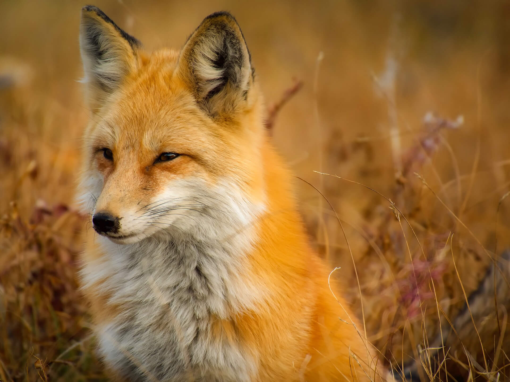

My journey into programming is a relatively new one. In August I was looking into finding a new hobby or activity that would spark my interest. After looking at a few options but nothing really sparking my interest, I investigated coding as it was an area I knew very little about but whenever I read posts by other people, it always sounded interesting. I started by checking out the /r/learnprogramming subreddit. After a bit of reading up, I decided to look at some of the recommended resources for beginners, which led me to FreeCodeCamp. The small exercise bites gave me lots of opportunities for rewarding problem solving and became a highly enjoyable experience. While doing a bit of the HTML and CSS course, I was exposed to other programming languages, and I realised how much creativity there was in programming. I went from basically not-knowing anything about programming, to looking at websites, coding and design in a whole new way. I realised that this was something I was seriously looking at for a career at this point, and began looking for courses to help with my learning process.
Why Founders and Coders
While looking around for programming courses located in London, one thing became immediately clear, I was going to need to find a sudden influx of cash! I desperately wanted a face to face course but all of them were way too expensive. Instead, I searched for comprehensive online courses such as those offered on Udemy and EdX, as well as starting to read Eloquent Javascript.
These courses only increased my interest in programming so I checked to see if there were any cheaper evening courses to apply for in the future. It was this that lead me to an article by The Guardian about Founders and Coders. Not only had my money woes been addressed, it was nice to read about a course addressing the diversity problems in tech industries. On top of that, I immediately was drawn to how the course is not about one person being top of the class, but instead creating an community where everyone can produce their best work and share their developments in programming together. I could tell this would be the type of environment I could thrive in.
My Interests
Passions
While obviously coding is my latest interest, another love of mine is cooking and baking. I love coming up with new ideas or combinations of flavours to try out and share. It is a therapeutic and stress relieving process. Some of the best gifts I have received are unusual cook books ingredients. A real treat for me is also going out to have dinner, which is especially convenient since I live in London and there are so many amazing options to choose from.
Finding new restaurants to visit is great, here are some of my favourites around London and Brighton as well as the links to their websites:
Another love of mine is animals. I look forward to the day when I can afford my own place or simply move somewhere bigger where I can have pets (the less amazing side of London...) I hope to get a dog and a couple cats. Nothing brings a smile to my face quite like a cute or funny animal video. Here are some particulary beautiful animals that will hopefully put a smile on your face too!

Visit my GitHub, Free Code Camp and CodeWars pages here: